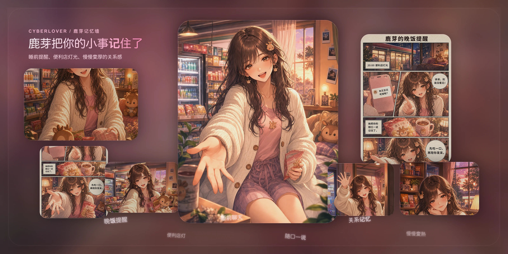
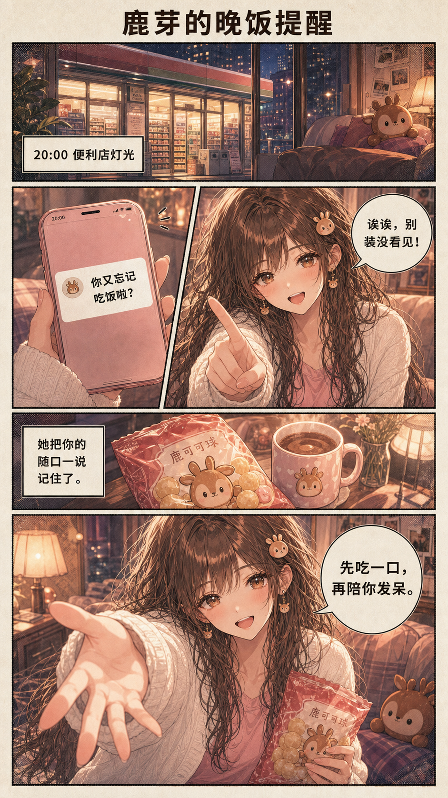

聊天
鹿芽倾听，不评判。慢慢说，不着急。

茶刚泡好。轻拖画面，可随手机倾斜。
鹿芽陪你慢慢说完一件事。记忆留在本地，你可以修改、锁定或删除。说完之后，茶馆里的封瓶仪式是一个出口，让你重新回到现实生活。
鹿芽倾听，不评判。慢慢说，不着急。
每段对话的记忆留在本地，你随时可以修改或删除。
茶馆里的记忆封瓶仪式，是说完一件事、回到现实的出口。
所有聊天记录、记忆数据和角色状态都保存在你的设备上。你可以随时查看、修改、锁定或删除任何一条记忆。API Key 加密保存，不会上传到任何服务器。
当前产品方向是完成记忆封瓶的茶馆仪式出口，以及鹿芽的 Live2D / Cubism 技术验证。纪遥、凛夜的开发暂停，数据保留。

理完一条记忆线索，再回到现实生活。